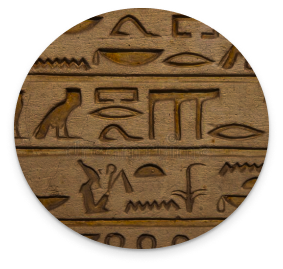
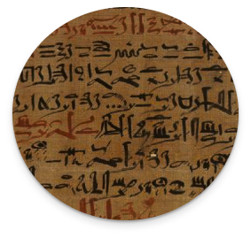
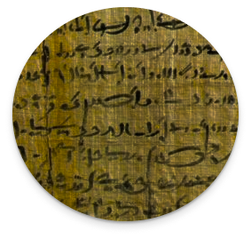

FORMAS DE ESCRITA
Você sabia que não existia apenas o hieróglifo no Antigo Egito?
Haviam três formas de escrita:
-

Hieróglifos: A mais conhecida, mais formal, com desenhos detalhados, usada para monumentos, templos e para cunho religioso.
-

Hierática: Uma versão um pouco simplificada, mas que ainda era usada para coisas formais, como documentos.
-

Demótica: A escrita usada pelo povo, onde era mais prática, com mais abreviações, usada para registros do dia a dia e etc.